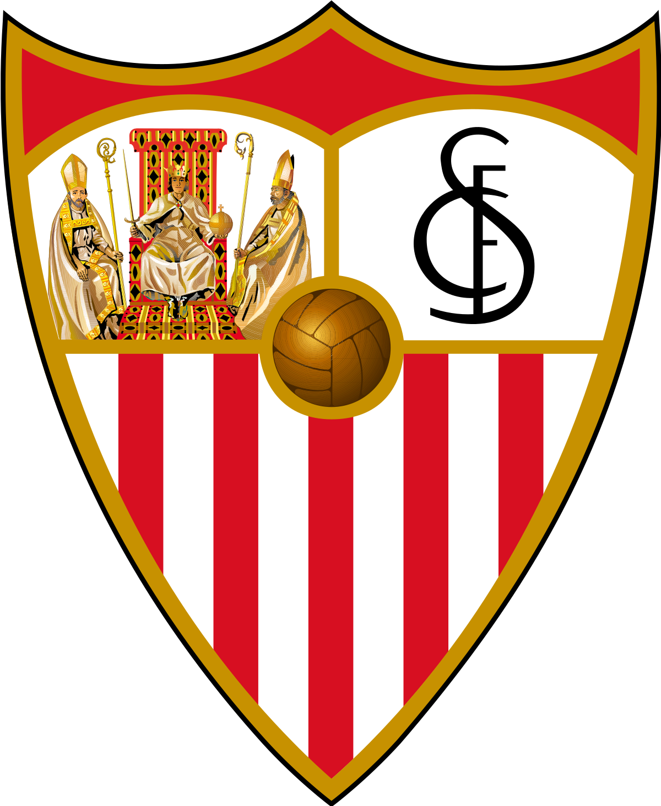
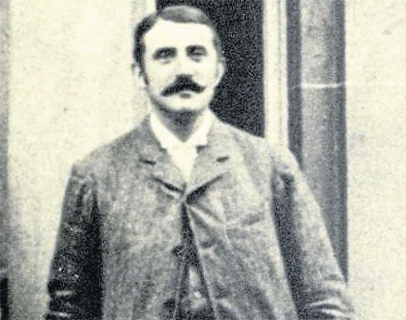

Sevilla Fútbol Club
El Sevilla Fútbol Club es un club de fútbol español organizado como sociedad anónima deportiva. Tiene su sede en Sevilla, capital de la comunidad autónoma de Andalucía, y actualmente juega en Primera División. Fue fundado el 25 de enero de 1890 y su primer presidente fue el vice-cónsul británico Edward Farquharson Johnston. 9 Posteriormente fue inscrito en el registro de asociaciones el 14 de octubre de 1905, siendo su presidente el jerezano José Luis Gallegos Arnosa.
 